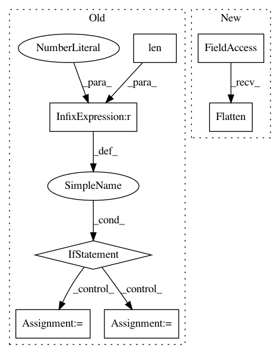

b1bfd16945a658d02847209e46a2ba8d72b456e1,autokeras/hypermodel/hyper_block.py,Flatten,build,#Flatten#Any#Any#,324
Before Change
def build(self, hp, inputs=None):
input_node = layer_utils.format_inputs(inputs, self.name, num=1)[0]
output_node = input_node
if len(output_node.shape) > 5:
raise ValueError(
"Expect the input tensor to have less or equal to 5 "
"dimensions, but got {shape}".format(shape=output_node.shape))
// Flatten the input tensor
// TODO: Add hp.Choice to use Flatten()
if len(output_node.shape) > 2:
global_average_pooling = \
layer_utils.get_global_average_pooling_layer_class(
output_node.shape)
output_node = global_average_pooling()(output_node)
return output_node
class Reshape(HyperBlock):
After Change
def build(self, hp, inputs=None):
input_node = layer_utils.format_inputs(inputs, self.name, num=1)[0]
if len(input_node.shape) > 2:
return tf.keras.layers.Flatten()(input_node)
return input_node
class SpatialReduction(HyperBlock):
In pattern: SUPERPATTERN
Frequency: 3
Non-data size: 7
Instances
Project Name: keras-team/autokeras
Commit Name: b1bfd16945a658d02847209e46a2ba8d72b456e1
Time: 2019-07-01
Author: jhfjhfj1@gmail.com
File Name: autokeras/hypermodel/hyper_block.py
Class Name: Flatten
Method Name: build
Project Name: HyperGAN/HyperGAN
Commit Name: 7a65d9993bdda4a5248f6aa313abf687faa031a6
Time: 2020-06-27
Author: martyn@255bits.com
File Name: hypergan/configurable_component.py
Class Name: ConfigurableComponent
Method Name: layer_linear